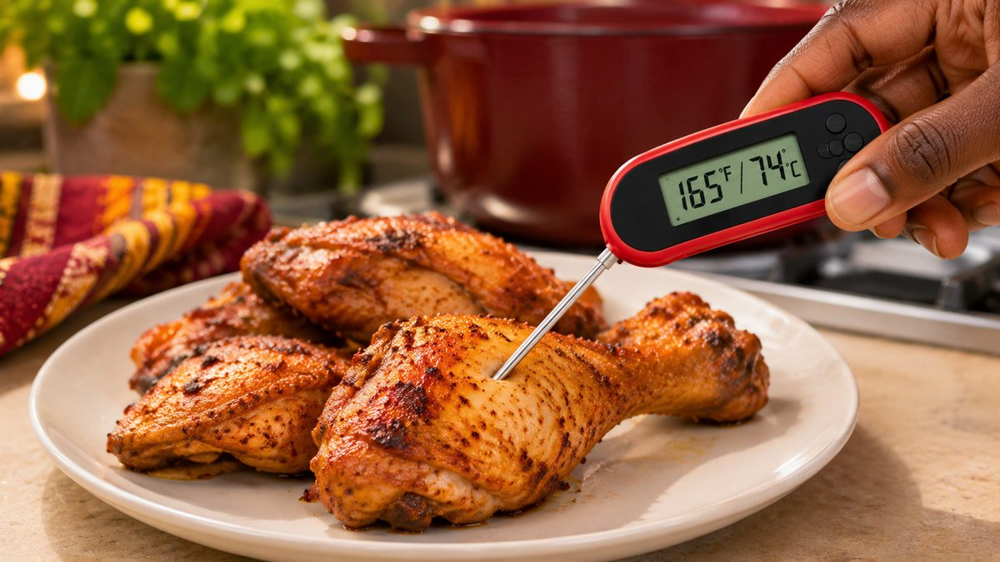

Orientation
The chicken does two jobs: it is served with the rice, and the broth it cooks in becomes part of the flavour base for the Jollof.
Why it matters: Undercooked chicken is a food-safety risk. This page includes a checkpoint you must not skip.
Season, cook and reserve
Season the chicken
Put the chicken in a suitable pot and add the seasonings in your recipe — such as curry powder, thyme, salt and garlic. Spread the seasoning across the chicken.
Add water and cook
Add the required water and put the chicken on the heat. The suggested estimate is about 20–30 minutes, but the real time depends on the size and type of chicken pieces.
Check the temperature
Use the food thermometer before you remove anything (see the checkpoint below).
Remove the chicken and keep the broth
Carefully lift out the cooked chicken and set it aside. Keep the seasoned broth — you will add it to the tomato base on page 3.4.
Food-safety checkpoint: 165°F / 74°C
Insert the food thermometer into the thickest part of the chicken. It must reach a minimum internal temperature of 165°F (74°C).
Do not rely on cooking time or colour alone. If it hasn’t reached 165°F (74°C), keep cooking and check again.

Why keep the broth?
The broth is not leftover cooking water. It carries flavour from the chicken and seasonings, and it will become part of the flavour base for your rice.
Quick check: safety decision
Key takeaways
- Chicken must reach 165°F (74°C) in the thickest part — check it with a thermometer.
- Cooking time (about 20–30 minutes) is only an estimate.
- Keep the seasoned broth for the Jollof.